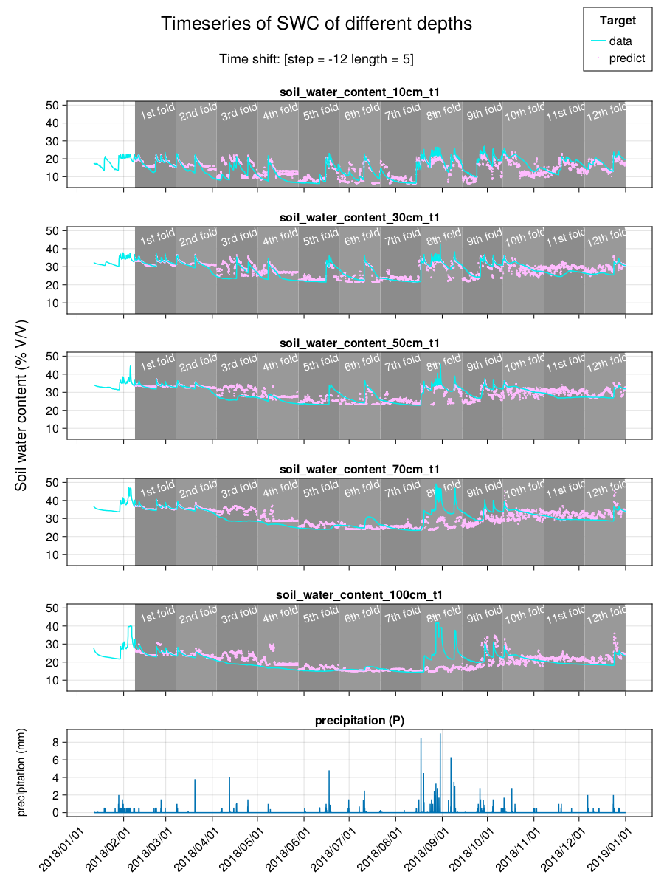
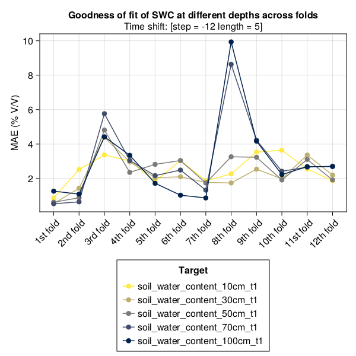
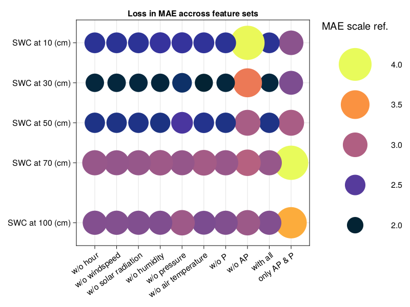
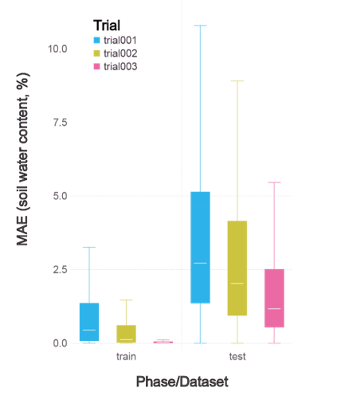

is also a widely applied feature analysis/selection tool.
Effectiveness of CART in SWC Estimation




This study (Trial003)
Pekel (2020)
Carranza et al. (2021)
Algorithm
•Decision tree
•Decision tree
•Random forest
Loss in testing dataset
•Averaged MAE = 0.018 (1.8 %) over 12 subsets •Median MAE = 0.0117 (1.17%) over all data points across total 12 subsets
•Median MAE = 0.006-0.012 for the same dataset but different tree models
•MAE = 0.01-0.0173 across fields of different types of crop
Time shift
•10-minutes forecast
•Nowcast
•Nowcast
Target feature
•SWC of 10 - 100 cm depth
•SWC of 30 cm depth
•SWC of ~18 cm depth (estimated by GPR*)
Input features
•Basic atmospheric measurements
•Basic atmospheric measurements AND soil temperature
•Vegetation Indices derived from multi-spectral images obtained by UAV
Application of Julia in the Study
Why Julia?
A balance between dynamic and static typing
Consistent syntax, flexible and easy to extend
Rapid prototyping; running fast
Coding with Julia is a pleasure
Julia’s type system is reasonable for scientists
Prepare the data in a breeze
DataFrames.jl is awesome
Great Package managing system
Simple and consistent
Maximize the reuse of code
Easy to test and maintain
Data preparation with julia
usingSWCForecastBaseusingDataFrames, ImputeusingSWCExampleDatasetsdf = SWCExampleDatasets.dataset("NCUWiseLab", "ARI_G2F820_example") # load a dataset (made by SmallDatasetMaker)dfg =groupby(df, :hour) # group dataframe by column "hour"df1 =combine(dfg, All() .=> last; renamecols=false)# combine groups by taking the last row of `All` columns. "." is the broadcasting operator.select!(df1, AsTable(:) =>ByRow(nt ->map(x -> (islnan(x) ? missing: x), nt)) => AsTable)# replace all literal Not a Number as `missing`select!(df1, All() .=> (x ->all(ismissing.(x)) ? 999: x); renamecols=false)# if all missing then 999 (e.g., to_substitute = 999)Impute.interp!(df1) # linear interpolationImpute.locf!(df1) # LOCF: Last Observation Carried ForwardImpute.nocb!(df1) # NOCB: Next Observation Carried Backwardtransform!(df, AsTable(Cols(r"\Aprecipitation")) =>ByRow(maximum) =>:precipitation_max)# Take the largest observation of precipitation in the site as a new variable (column)disallowmissing!(df1);
Key points
select, transform and combine shares the same syntax.
Broadcasting makes multi-column transformations easy.
Multiple dispatch makes function employment simply, clear, and flexible (e.g., islnan).
An example of how multiple dispatch works
Hint
Julia dispatches method of the same name according to the type of the input argument(s).
To distinguish whether a value of any type is “literally” Not-a-Number:
"""Return true if it is literally not a number.For example, `all(islnan.(["#VALUE!", "nan", "NaN", "Nan", nothing]))` is `true`."""functionislnan(x::AbstractString)ifin(x, ["#VALUE!", "nan", "NaN", "Nan"])returntrueelsereturnfalseendendlistfalse ="`Nothing`, `Missing`, `DateTime`, and `AbstractString`""""For `x` being the type other than the types listed above, `islnan(x)` falls back to `isnnm(x)`.See `isnnm`."""functionislnan(x::Any)returnisnnm(x)end"""Check if `x` is `missing`, `nothing` or `NaN`.Different from `isnan`, for `x` being either of $listfalse, `islnan(x)` returns `true` for `Nothing` and `Missing`, and returns `false` for the rest.The difference between `islnan` and `isnnm` is that, `isnnm` check only `NaN` for Not-a-Number. If you input something like `"#VALUE!", "NaN"`, it returns `false` (NOT `missing`, `nothing` or `NaN`)."""isnnm(x::Missing) =true# `isnan(missing)` returns missingisnnm(x::Nothing) =true# `isnan(nothing)` raises MethodErrorisnnm(x::DateTime) =false# `isnan(DateTime)` raises MethodErrorisnnm(x::AbstractString) =false# `isnan(AbstractString)` raises MethodErrorisnnm(x) =isnan(x)
module SWCForecastBase# # ImputationusingImpute, Dates, Statistics, DataFramesinclude("myimputation/myimpute.jl")export imputemean!, imputeinterp!, removeunreasonables!# # Fundamental utilitiesinclude("myimputation/checkmissnan.jl")export chknnm, isnnm, islnaninclude("pipeline.jl")export simplepipelineusingChaininclude("combinegroup.jl")export combinegroup_allcolsusingNaNMathinclude("precipitation.jl")export movingaverage# # Series to supervisedusingShiftedArraysinclude("series2supervised.jl")export series2supervised# # MLJ Model wrappersusingMLJinclude("mljmodels/treemodels.jl")export fstree, twofstree, manytrees# # Prepare the tableusingDataFramesinclude("preparetable/briefinfo.jl")include("preparetable/preparetable0.jl")include("preparetable/requirement.jl")include("preparetable/preparetable.jl")export PrepareTable, PrepareTableDefault, preparetable!, ConfigAccumulate, ConfigPreprocess, ConfigSeriesToSupervised# # Train and testusingOkTableToolsinclude("preparetable/traintest.jl")export traintest!, train!, test!usingCSV, Random, FileTreesinclude("preparetable/save.jl")export save# # Plottinginclude("forplot/dataoverview.jl") # only for testusingDates, Statistics, DataFrames, ShiftedArrays, StructArraysusingCairoMakieinclude("forplot/dataratio.jl")export dataratio, DataRatio, transform_datetime!end
In myimputation/checkmissnan.jl
"""Return true if it is literally not a number.For example, `all(islnan.(["#VALUE!", "nan", "NaN", "Nan", nothing]))` is `true`."""functionislnan(x::AbstractString)ifin(x, ["#VALUE!", "nan", "NaN", "Nan"])returntrueelsereturnfalseendendlistfalse ="`Nothing`, `Missing`, `DateTime`, and `AbstractString`""""For `x` being the type other than the types listed above, `islnan(x)` falls back to `isnnm(x)`.See `isnnm`."""functionislnan(x::Any)returnisnnm(x)end"""Check if `x` is `missing`, `nothing` or `NaN`.Different from `isnan`, for `x` being either of $listfalse, `islnan(x)` returns `true` for `Nothing` and `Missing`, and returns `false` for the rest.The difference between `islnan` and `isnnm` is that, `isnnm` check only `NaN` for Not-a-Number. If you input something like `"#VALUE!", "NaN"`, it returns `false` (NOT `missing`, `nothing` or `NaN`)."""isnnm(x::Missing) =trueisnnm(x::Nothing) =trueisnnm(x::DateTime) =falseisnnm(x::AbstractString) =falseisnnm(x) =isnan(x)"""`chknnm(df)` check if DataFrame `df` contains missing values or NaN. Use this before input `df` into machine."""functionchknnm(df) ddf =describe(df)ifsum(ddf.nmissing) >0error("There are still missing value(s) in the DataFrame.")endifany(islnan.(ddf.mean))error("Data contains NaN; which might cause crash in model training.")endend
Soil-water content (SWC) estimation for agricultural purposes
Current status
Nowcasts of SWC with acceptable error levels using readily available atmospheric parameters
Only single site
Future work
Using three-day rainfall forecast
Joint-station SWC estimation
Reference
This slide is available at https://github.com/okatsn/COSCUP_2023_Slides
Surface Hydrology Lab. of NCU. n.d. “Aerial View of NCU Atmospheric and Hydrological Observatory.” https://hydro.ihs.ncu.edu.tw/.
Tseng, I-Chieh. 2019. “Effects of evapotranspiration and infiltration on variations in soil moisture and changes in groundwater levels.”National Digital Library of Theses and Dissertations in Taiwan. https://hdl.handle.net/11296/q37cpq.